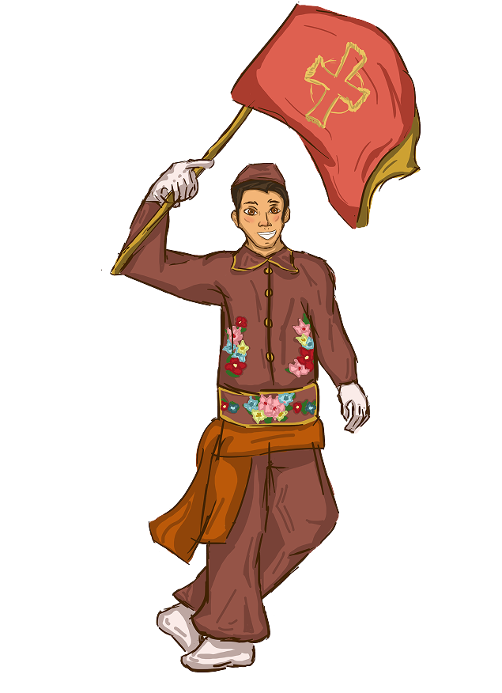
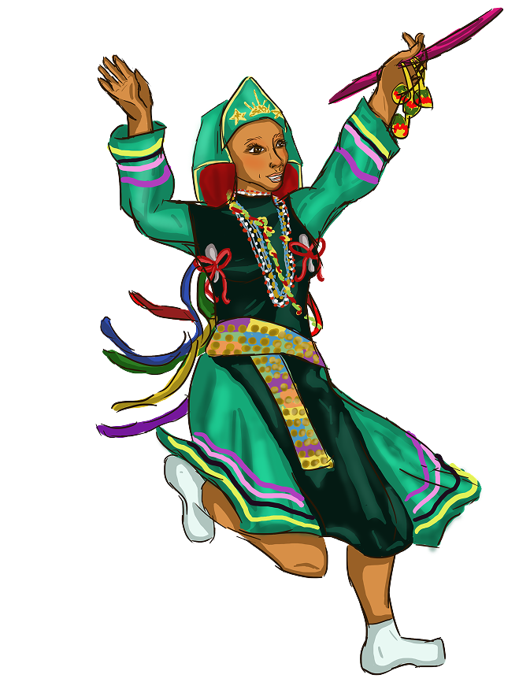
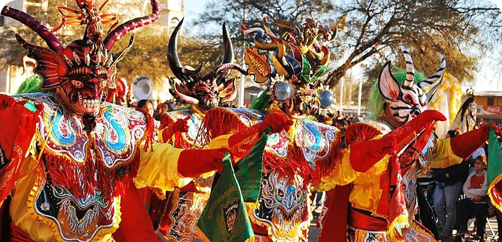
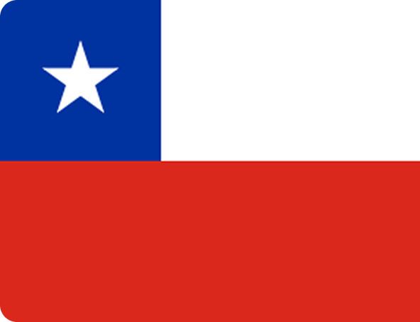
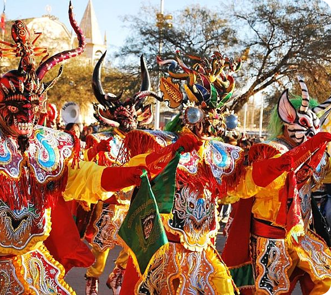

CHILE
Festa de La Tirana
Chinos

O Chino é uma das figuras mais antigas e tradicionais da Festa de La Tirana, sendo considerado um símbolo da religiosidade popular do norte do Chile. Os chamados Bailes Chinos têm origem pós-hispânica e estão ligados às antigas confrarias religiosas de músicos e dançarinos devotos da Virgem. Segundo registros do próprio santuário de La Tirana, essa tradição chegou à festividade a partir de grupos provenientes de Andacollo, importante centro de peregrinação mariana do norte chileno, onde os bailes chineses já estavam presentes desde o período colonial.
A tradição está profundamente associada às comunidades de trabalhadores e mineiros. De acordo com documentos patrimoniais do SIGPA (Sistema de Información para la Gestión del Patrimonio Cultural Inmaterial), os Bailes Chinos surgiram do encontro entre práticas cerimoniais indígenas e a liturgia católica introduzida durante a colonização espanhola. O próprio termo chino deriva de uma palavra de origem quéchua relacionada à ideia de “servidor” ou “servo”, reforçando o papel devocional desses participantes dentro das festividades religiosas.
O Kullaca é uma das danças tradicionais mais representativas da Festa de La Tirana, sendo considerado um símbolo da religiosidade popular do norte do Chile. Os chamados Bailes Kullacas têm origem pós-hispânica e estão ligados às antigas confrarias religiosas de músicos e dançarinos devotos da Virgem. Segundo registros do próprio santuário de La Tirana, essa tradição chegou à festividade a partir de grupos provenientes de Andacollo, importante centro de peregrinação mariana do norte chileno, onde os bailes kullahcas já estavam presentes desde o período colonial.
A presença das Kullacas na Festa de La Tirana evidencia o sincretismo característico da celebração, onde tradições pré-hispânicas foram incorporadas ao culto católico da Virgem do Carmo. Ao longo do tempo, a dança tornou-se uma das representações femininas mais emblemáticas da festividade, preservando elementos ancestrais da cultura andina mesmo dentro de um contexto religioso cristão.
Kullacas


A Festa de La Tirana é uma importante celebração religiosa e cultural realizada anualmente em 16 de julho, na localidade de La Tirana, na Região de Tarapacá, no norte do Chile. A festividade reúne milhares de peregrinos e é marcada por danças tradicionais, trajes coloridos, máscaras e música, combinando influências das tradições andinas e indígenas com elementos da religiosidade cristã. Atualmente dedicada à Virgem do Carmo, a celebração possui origens históricas que remontam ao período colonial e se consolidou como uma das maiores manifestações culturais do país.

O Chile possui uma longa diversidade cultural construída por povos originários como os mapuches, aimarás e atacamenhos. O espanhol é a língua predominante, mas diferentes idiomas indígenas seguem presentes em comunidades locais. O país viveu uma das ditaduras mais marcantes da América Latina entre 1973 e 1990, período que deixou profundas reflexões sobre memória e direitos humanos.
A Fiesta de La Tirana é uma das maiores expressões da cultura popular chilena. Suas danças, máscaras e trajes coloridos unem tradições indígenas andinas e devoção católica em uma celebração que atravessa séculos. A permanência desses costumes representa a sobrevivência das identidades locais diante dos processos de colonização e transformação social.
